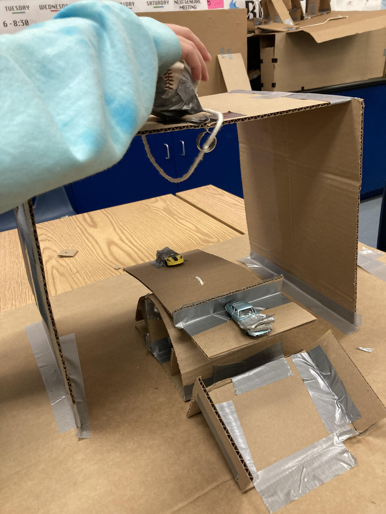
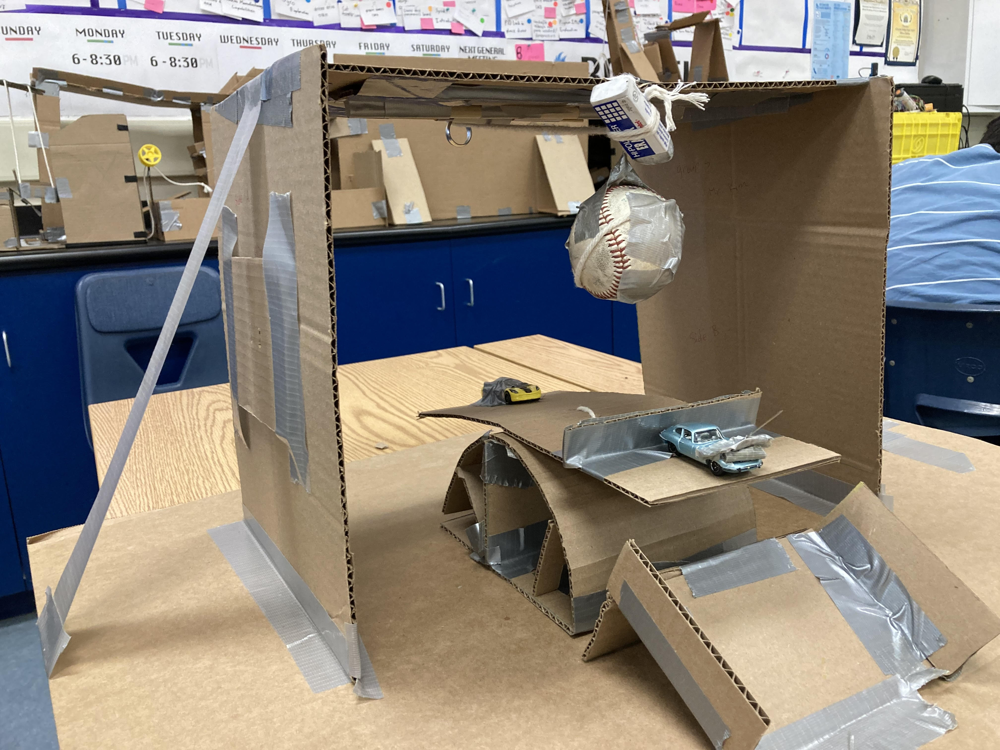
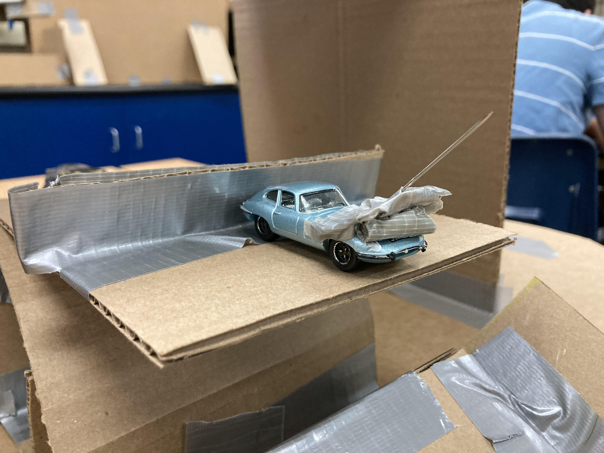
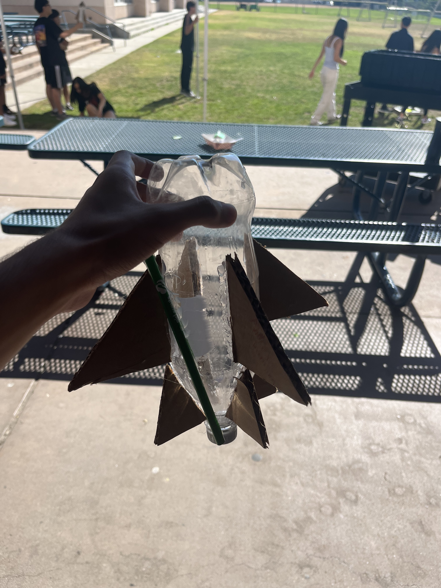
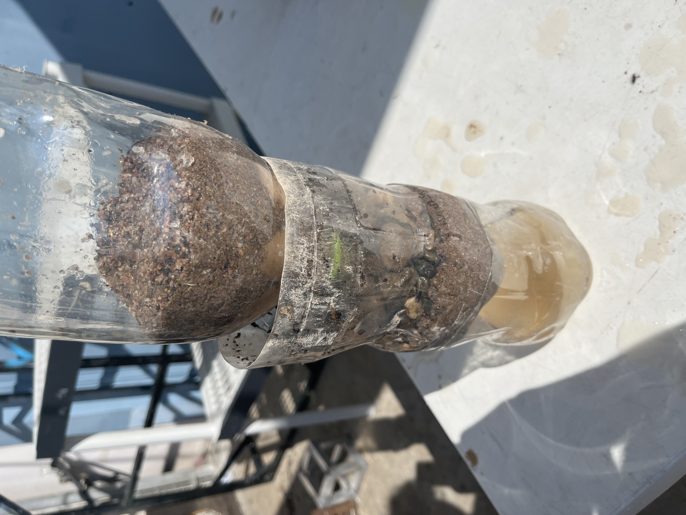
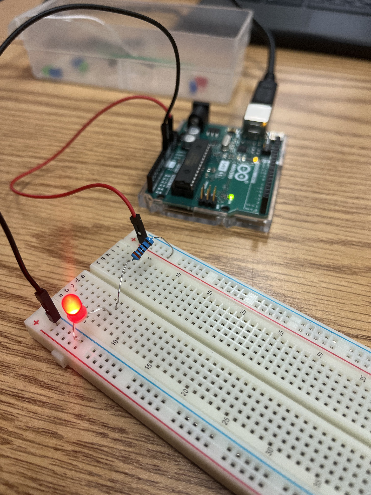
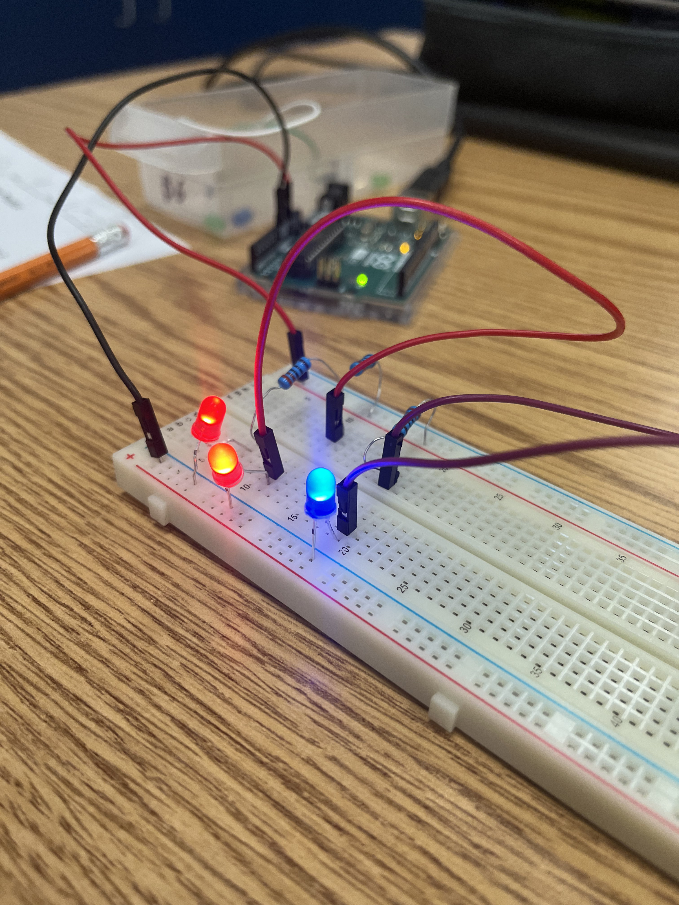
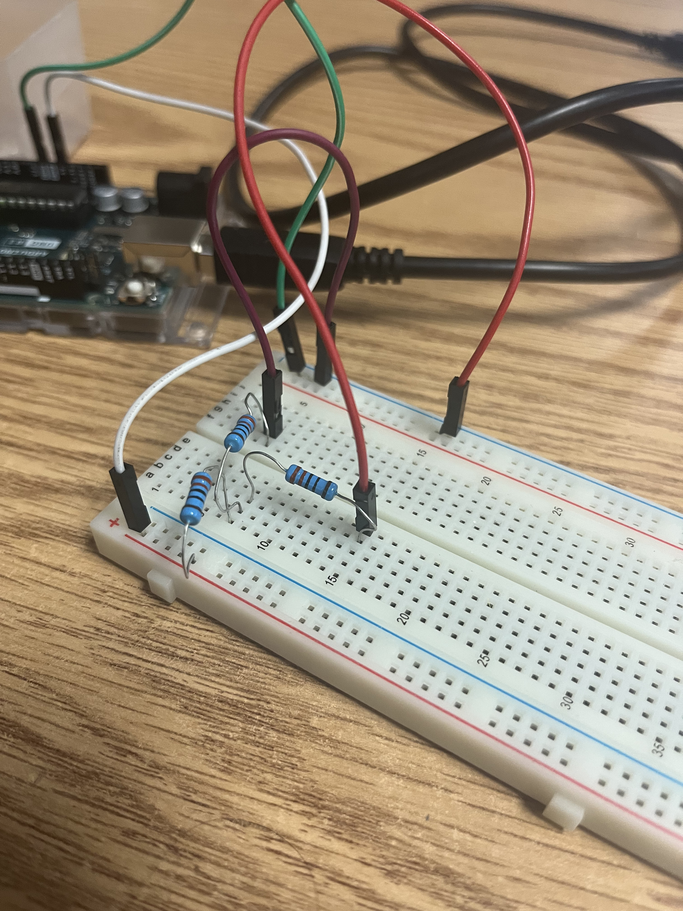
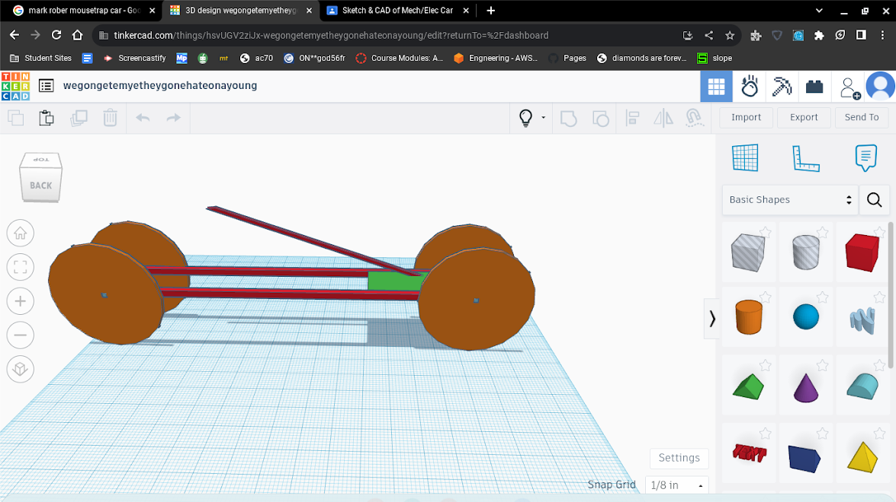

Im pretty sure this was the first one i was supposed to do. Around when school started
and when we first learned basic coding. It was pretty cool when I made my first website for the world to see
Journal entry august 26
Im also prettys sure this was supposed to be a quick check in on my website
journal entry on september 11
This is right when we finished the rube goldberg machine. I forgot to update
my website, so more will be explained on a later journal entry.
This is after we did the rube gold
berg machine. After our team did the cadding, the buildig process was pretty easy and fun. Except for when we
had problems with the ball dropping to fast. To fix this we added a counter weight,
so it would drop slower. Below are pictures



heres the video of it popping
Journal entry 10/6/23
we made a cardboard arm that can pick up a
water bottle. We thought we had it working but then We realized the problem was the strings got in the
way. So to fix this we cut a hole through the hand
to grab the strings from the other side. This allowed us to grab it like a Real hand.
Journal entry 10/20/23
On monday the 16th, we began our construction a water bottle that could fly. We
cadded first, then on wednesday, we faced our first problem. We brought the wrong size bottle.
We got clowned on but we still persisted and made our rocket look cool with 8 fins. In terms of flight,
we didn't do so well. It might be because no one knew, including us, how much pressure and how much water
to put in the rocket. Or it could have been because our design was not the best. We had fun though.
Heres the rocket

Heres video of 1st attempt
another one
Journal entry 10/26/23
Today we made a water filter. The materials were a soda bottle, cotton, dirt
sand, small rocks and big rocks. We did a design that was cotton,small rocks, dirt then big rocks.
Then the "correct design" of cotto,n sand, small rocks, then big rocks, but it was double layerd.
Honestly the incorrect design worked better. This might be because of the double layers and how
the sand is still dirty in some way, so the already clean water because a little dirtier.
heres picture

video
Journal entry 11/9/23
We did a physical bread board of some lights and we would make them shine.
We had trouble with actually making the lights shine untill we realized the current goes like verticle
and each light or resistor needs to be on a different verticle line. Once we found that out we did the rest
of lab 3 but didnt start lab 4
pictures
first cirut \/

second circut \/

third \/
fourth \/

journal entry 11/17/23
I think we learned about buisness engineering presented in the business
engineering slide. These include such things as UI and UX. Also law and ethics
plays a part in buisness engineering.
journal entry 12/1/23
We did business slides entry on 11/29/23. Our invention was retractable skis
My group was Aaron, Aidan, and Me. This legendary invention redesigns travel with skis
making them more carriable. We recived critisism on our price because we set
it lower than normal skis. Mr Kim said that instead we should raise the
price because it has a gimmick.
journal entry 1/10/24
I don't know the weight of our bridge
I dont know how much the bridge held.
I dont know the ratio of the bridge weight to weight carried.
The heaviest part of the bridge was the stacked beams.
The design of my bridge came from my mind. I wanted to have two beams but I guess my team didnt see eye to eye. We stcked a bunch of beams at one point so we could put the string there, and it would be more supported.
The designed did not work as intended. The bridge could not hold a lot of weight
The point of failure was the end. This happened because I didn't know I could hold it with my thumb under and two finger ontop
so I held two finger ontop and the bottom part of the bridge was on the table
We could have glued a little better and overlay the beams that were going to connect.
I do not have a single video or picture of our bridge.
Journal entry 1/12/24
Today we learnd more about chemical engineering. This stuff includes not exactly the reactions,
but the parts of them. In class we made oobleck, mixing water and cornstarch. Me and Aidan
accidently put to much water so we had to pour it out, but in the end we got a good enough substance that felt really wierd.
Journal entry 1/29/24
Me and Aidan have been paried up to make a mouse trap car. We started with a sketch, this idea
evolved into a CAD, which had the bluepring for success. This cars mains
source of energy is a mousetrap. The cars wheels will be CDs, because of the low
weight and low friction. Withthe mousetrap, we will extend the arm, so there it takes
more distance for the end to travel. We will attach this to a string, which we will put around an axel, to rotate it.
We need to make sure that it doesn't spin to fast, or we will loose some energy.
Here is an image below:

Journal entry 2/14/24
We have finished the first iteration of our Mouse Trap car. We may or may not
have lost paper but we have tooken wheel measurement ratios. We calculated that our car
would reach around 30 feet, and it reached around 25. The biggest problems were the string
getting tangled up on the axel. To fix this, instead of using string, we will use wire. For the arm length, we are looking for an increase
to increase distance, but keep the body length around the same. Biggest problem is the wheels
keep being not straight. Even after re gluging, our car ends up turning left, which costs us distance.
To fix this we will have to be extra carefull with gluing.
12 inch axel, the entire body is 24 inch. Axel width is 0.22 axel and 4.6 inch CD diameter.We did get a video of the car rolling, and we are pretty
satisfied considering this is our first time making this. Video is below.
Journal entry 2/26/24
About 1 month ago, we started our journy on making a mouse trap car.
The first iteration was rough. We had to carboard double stacked beams for the body, and the axels
went through. To connect the body to the mousetrap, we used tape, which was not the best idea. It made the mousetrap very unstable when we pulled it back. The mousetrap arm was connected by tape, and it connected with the axel by string.
The axel was wood, and we added straws to decrease friction. When we glued the wheels they kept bending themseleves, and that kept causing the car to turn
Our second iteration was much better, even though some of it was last minute. To start, we didnt use tape for connecting the mousetrap to the body, isntead using another
piece of cardboard and hot glue. This proved to be way more effective. The next fix was we connected the mousetrap arm with glue and tape, which would make it pull easier. The string which would get tangled up was replace with fishwire, whcih we noticed was alot better.
Lastly, when gluing the wheels, we made sure to keep it more straight.
.jpeg)